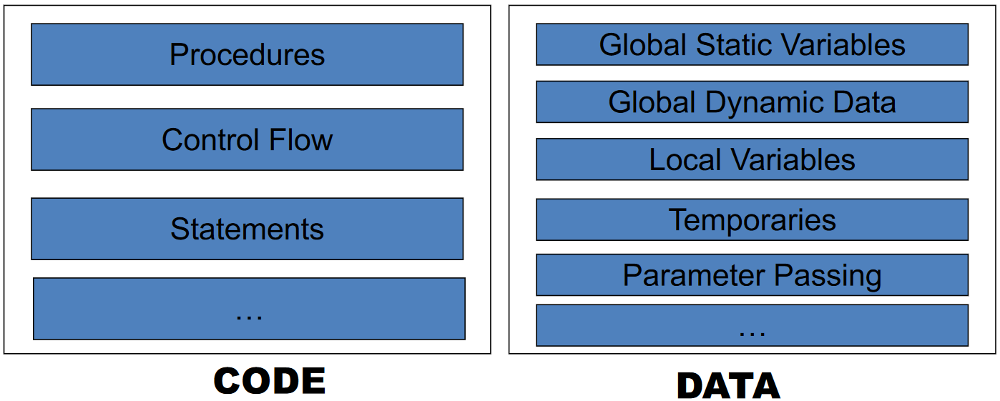
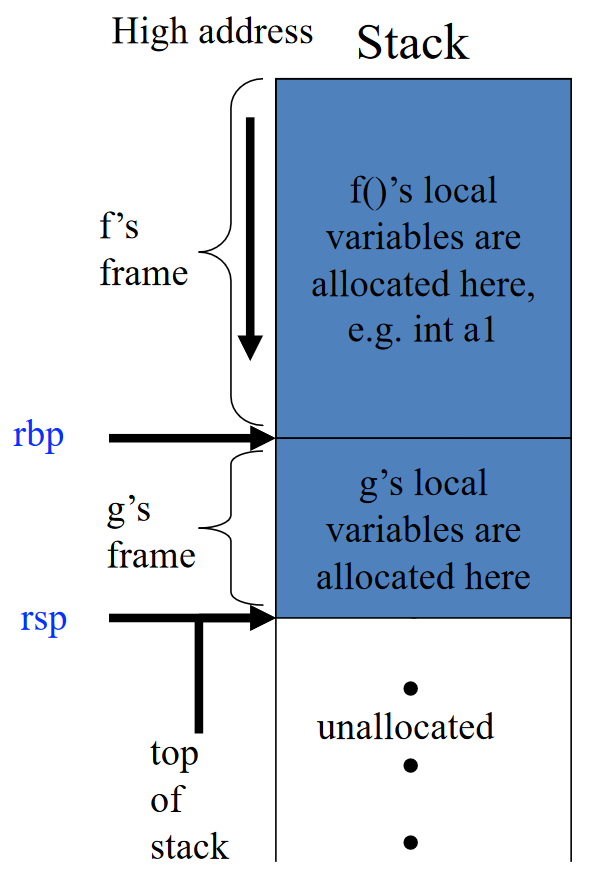

活动记录¶
约 2551 个字 12 行代码 预计阅读时间 9 分钟
编译器应该将所有“代码”（Code）翻译为汇编指令并为“数据”（Data）分配空间。要做到这一切，必须了解现代处理器的细节，以及对代码生成的影响

现代处理器有几大部分构成：
- ALU
- Contorl
- Memory
- Registers
32-bit x86 Linux 内存布局

而在运行时，程序的内存布局如下：
本章重点为其中的活动记录（Activation Record）
活动记录/栈帧¶
活动记录/栈帧的定义¶
问题引入
类似于
我们称对函数 P 的调用是 P 的一次活动（Activation）。在如上的例子中，有递归调用，其中许多 x 同时存在，那么如何保存局部变量？
- 每个调用都有自己的局部变量实例化
- 函数调用以后进先出（LIFO）方式运行
- 使用 LIFO 数据结构 —— 栈（Stack）
活动记录（Activation Record）或栈帧（Stack Frame）是一个函数在栈上的一片内存区域，用于存储函数调用时的信息，从而连接函数调用者（Caller）和被调用者（Callee）
其包含的信息可以包括：
- 相关机器状态（保存的寄存器、返回地址）
- 返回值的内存空间
- 本地数据的内存空间
- 指向用于访问非本地数据的栈帧的指针
主要的问题“在于如何布局活动记录，使得调用者和被调用者能够正常通信？”
活动记录/栈帧的设计¶
活动记录的具体组织和实现不唯一
即使是同一语言，过程调用序列、返回序列和活动记录中各域的排放次序，也会因实现而异
考虑栈帧从高地址向低地址增长。在 x86 及 ARM 等指令集的体系结构中，都有栈指针/栈顶寄存器（Stack Pointer）和帧指针/基址寄存器（Frame Pointer/Base Pointer）
- 栈顶寄存器
- x86: ESP, RSP; ARM: SP
- 指向当前栈帧的低地址（结束地址）
- 代表栈顶
- 基址寄存器
- x86: EBP, RBP; ARM: FP
- 指向当前栈帧的高地址（起始地址）
- 编译后的代码通过使用帧指针的偏移量来引用局部变量和参数
栈顶寄存器和基址寄存器
当在 f 里调用 g 时

以如下的代码为例：
当 f 调用 g 时：
- 帧指针 RBP 指向
g帧的开头 - 栈指针 RSP 指向栈顶

f 调用 g 的完整过程
- Caller 做调用函数准备
- 当 PC 在调用
g之前，当前指令执行和栈帧如下所示

- 将参数和返回地址压入栈


- 在栈上保存 Caller-save 寄存器
- 跳转到函数
g的入口（通过改变 PC）
- 当 PC 在调用
- 进入 Callee
- push RBP: 通过将旧帧指针压入栈来保存它，从而方便返回 caller f 时恢复 f 的栈帧与访问 f 的局部变量。另外注意 RSP 已经向下移动了


- mov RBP, RSP: 将栈指针的值赋给帧指针，这样帧指针就指向了当前栈帧的底部，从而表示当前栈帧的开始
- 在栈上保存 Callee-saved 寄存器
- 在栈上通过减小 RSP 来分配局部变量的空间

- push RBP: 通过将旧帧指针压入栈来保存它，从而方便返回 caller f 时恢复 f 的栈帧与访问 f 的局部变量。另外注意 RSP 已经向下移动了
- 从 Callee 返回
- 恢复 Callee-save 寄存器
- mov RSP, RBP: 通过把帧指针的值赋给栈指针，清除当前栈帧的局部变量
- pop RBP: 通过弹出旧帧指针来恢复 caller 的栈帧
- ret: 通过弹出返回地址和跳转到返回地址来返回 caller

总结¶
和上述 x86 例子略有些差异
主要在返回地址和帧的分配上
假设函数 f(...) 调用函数 g(a1, ..., an)
- 当
f调用g时：- 栈指针指向
f传递给g的第一个参数 g通过简单地从栈指针（SP）中减去帧大小来分配帧
- 栈指针指向
- 当进入
g时- 将旧帧指针 FP 保存在帧内存中
- FP = SP
- 当
g返回时- SP = FP
- 取回保存的旧帧点（FP）
此外，栈帧的限制在于难以支持高阶函数，如嵌套函数（Nested functions）和作为参数和返回值的函数（Procedure as arguments and results），如：
| Pascal, Tiger | C | ML, LISP, Haskell | |
|---|---|---|---|
| Nested functions | √ | × | √ |
| Procedure as arguments and results | × | √ | √ |
在支持高阶函数的语言中，函数返回后可能需要保留局部变量，但我们假设 f 返回后不会使用局部变量（也因此我们使用堆栈）
寄存器使用¶
访问寄存器比访问内存快得多，将所有内容放入栈帧中可能会导致内存访问频繁（memory traffic），从而导致性能下降。因此，可以在寄存器中保留尽可能多帧的内容
- （一些）函数参数
- 函数返回地址
- 函数返回值
- （一些）局部变量
- （一些）表达式的中间结果（临时变量）
参数传递¶
背景知识
- Tiger 的参数方式：Call-by-value
- 实际参数的值作为形式参数的值进行传递和建立
- 对形式参数的修改对实际参数没有影响
- 对于 20 世纪 70 年代设计的大多数机器，参数都是在栈上传递的
- 问题：导致 memory traffic 过多
现代机器上的使用参数传递约定
- 前 k 个参数（k = 4 或 6）在寄存器中传递
- x86-64: RDI, RSI, RDX, RCX
- ARM: R0, R1, R2, R3
- 其余的在栈上传递
但是这也带来了新的问题：寄存器中传递参数导致额外的 memory traffic，因为有“保存”寄存器状态的需要
- 假设
f使用寄存器r保存局部变量并调用g，并且g也使用r进行自己的计算 r必须在g使用之前保存（存储到栈帧中），并在g使用完毕后恢复（从帧中取回）
Caller-save 和 Callee-save 寄存器
- Caller-save 寄存器：在调用函数之前，调用者保存寄存器的内容
- Callee-save 寄存器：在调用函数之前，被调用者保存寄存器的内容
Callee-Save 寄存器保存
为了解决这些问题，假设有一个函数 f(x) 调用函数 g(z) 时（均使用 r1 进行传递）：
- 寄存器覆盖：参数
x在调用h(z)时是一个死变量，则可以覆盖r1，不需要保存 - 使用全局寄存器分配（global register allocation）：不同的函数使用不同的寄存器组来传递参数，如使用
r1传递参数x，使用r2传递参数z，这样就不会覆盖 - 叶过程（Leaf procedures）：叶过程的参数可以在寄存器中分配，而不会导致任何额外的内存流量（因为不调用其他过程，不需要保存）
- 使用寄存器窗口（register windows）：每个函数调用都可以分配一组新的寄存器（如在 SPARC 上）
返回地址¶
如果 g 中的调用指令位于地址 a，则（通常）返回的正确位置是 a + 1，即 g 中的下一条指令，这称为返回地址
调用指令仅将返回地址放入指定的寄存器中。调用时非叶过程必须将原有的值写入栈（除非使用过程间寄存器分配），叶过程则不会
返回值¶
由被调用函数放置在指定的寄存器中，如
- x86-64 系统整型返回值：rax
局部变量和临时变量¶
一些局部变量、临时变量（表达式的中间结果）可以放置在寄存器中，将在寄存器分配部分讨论
框架驻留变量¶
很多地方都可以用寄存器，但是栈帧里的变量仍然需要，例如一个变量
- 它是通过引用传递的，因此它必须有一个内存地址
- 其地址被传递，例如 C 语言中的 &a
- 它由嵌套在当前过程中的过程访问
- 该值太大，无法放入单个寄存器中
- 变量是一个数组，需要进行地址运算才能提取元素
- 保存变量的寄存器是为了特定目的而需要的，例如参数传递（如上所述）
- 本地人员和临时人员太多，发生“溢出”（将在寄存器分配中讨论）
Block Structure¶
Block Structure: 允许嵌套函数声明的语言（例如 Tiger），内部函数可以使用外部函数中声明的变量，可以通过帧指针访问

Static Link¶
定义¶
每当调用 g 时，都会传递指向 f 的最新活动记录的指针，该记录立即将 g 括在程序上下文中，该指针即是 static link
使用静态链接访问非本地数据的过程如下：
- 每个函数都用其调用深度进行注释
- 当深度为
n的函数访问深度为m的变量时- 向上爬
n-m个链接来访问相应的活动记录
- 向上爬

类似于每次多传一个 Caller 的帧指针作为参数，这样就可以访问到 Caller 的变量
Static Links 实际调用示例
优缺点¶
- 优点
- 参数传递的额外开销很小
- 缺点
- 向上爬静态链接链以访问非局部变量的开销
- 每个变量访问都需要一系列间接内存引用
- 间接引用的数量 = 变量声明函数和使用函数之间的嵌套深度差异
- 函数可能嵌套很深
Lambda Lifting¶
当 f 调用 g 时，g（或 g 中嵌套的任何函数）实际访问的 f 的每个变量都会作为额外参数传递给 g，这称为 lambda lifting
这样即通过将非局部变量视为形参来重写程序，且翻译/转换过程需要从最内部的程序开始，然后向外进行
Lambda Lifting 实际调用示例

Display¶
可以维护一个跟踪程序词法嵌套结构的全局数组，其中在位置 i 包含指向最近进入的过程的帧的指针，该过程的静态嵌套深度为 i，这个数组称为 display
本质上，它指向当前包含可访问变量的活动记录集
Display 实际调用示例

Tiger 的典型栈帧布局¶

TODO
创建日期: 2024年6月21日 13:15:02